A collection of photographs featuring signs and construction equipment from throughout Europe.
🇮🇸 Iceland 🇮🇸
The picture that started it all, a quick snap while walking along the highway. Reminded me that signs in Europe are similar to the Playmobil toys that I used to have as a kid.
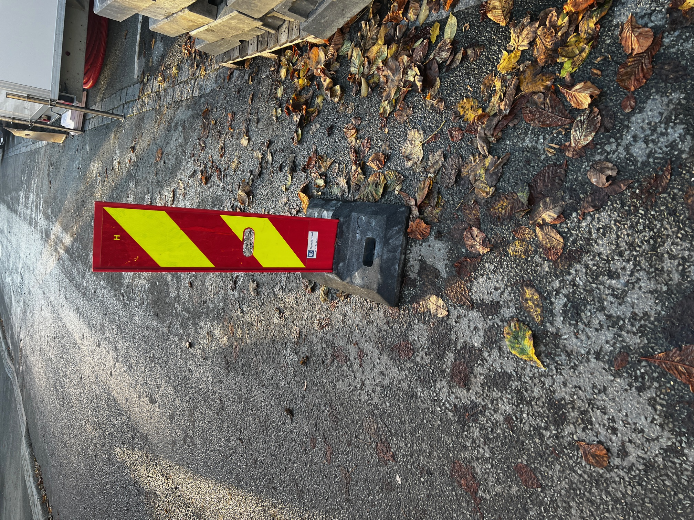
🇳🇴 Norway 🇳🇴
Not a sign, but a traffic divider. I probably made a few of these with my mom out of cardboard.
🇸🇪 Sweden 🇸🇪
A complex hybrid of a sign and horizontal traffic dividers, it is also the first picture to feature construction equipment - in this case a telescoping boom lift.
🇫🇮 Finland 🇫🇮
This photo was quickly taken before departing, but features my personal favorite, delineator posts, alongside a national monument.
🇪🇪 Estonia 🇪🇪
A quick snap from one of our daily runs.
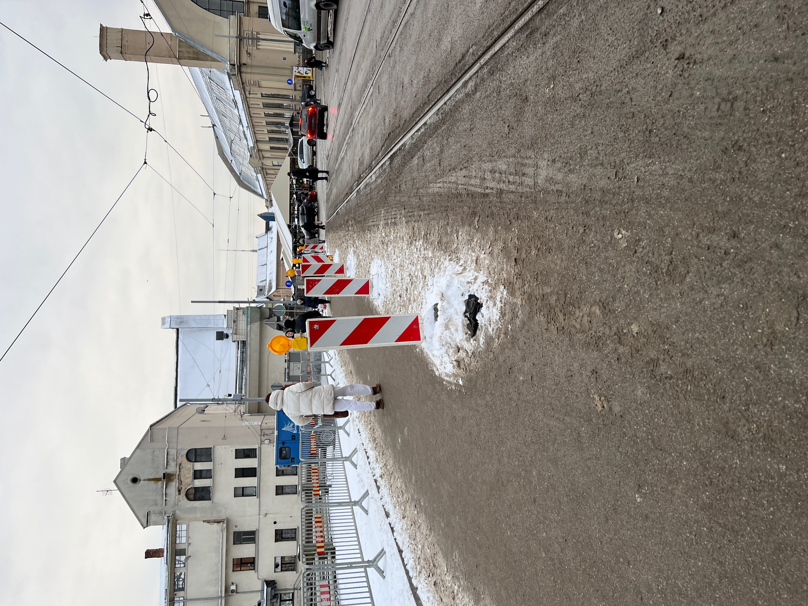
🇱🇻 Latvia 🇱🇻
Another quick snap outside of the bus station, and the market hall. More traffic dividers, these ones similar to Playmobil once again.
🇱🇹 Lithuania 🇱🇹
A traffic divider and a bucket of salt, quite necessary against the snow currently falling.
🇬🇧 England 🇬🇧
No more snow, but the first time a vehicle makes an appearance. The view was constant on our walk to the Tube, as there were road works going on during our stay.
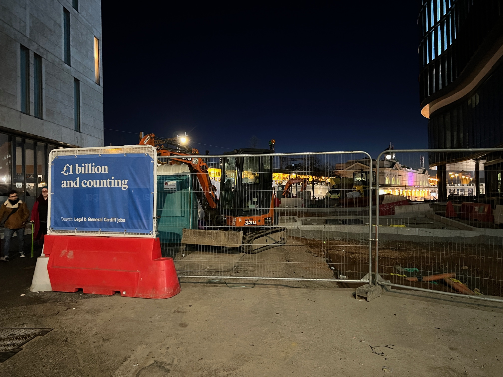
🇬🇧 Wales 🇬🇧
A short day trip in a tiny country ended with a photo of some barricades and a mini excavator.
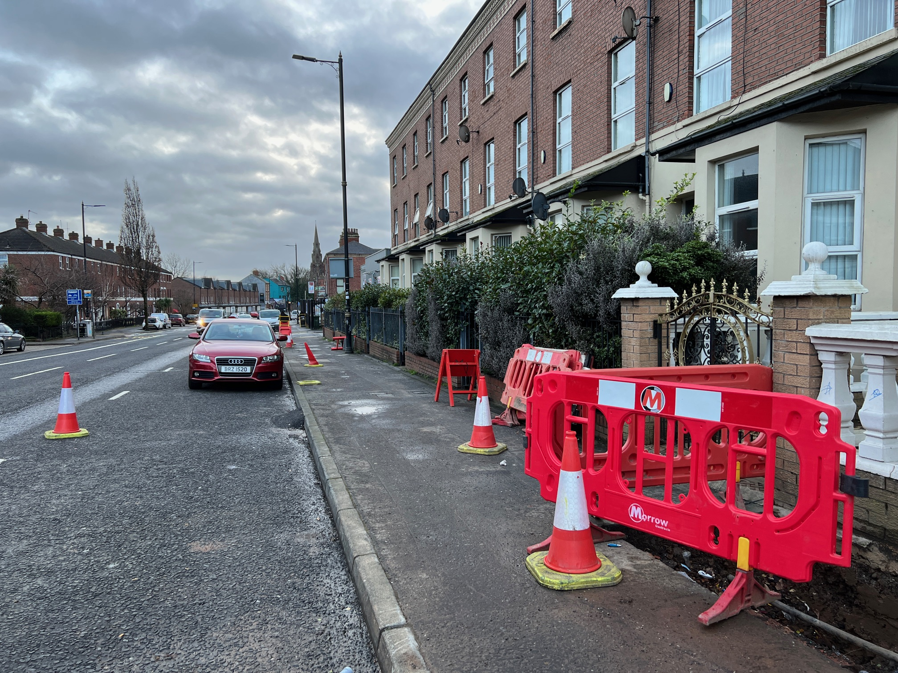
🇬🇧 Scotland 🇬🇧
Very common throughout the UK, some traffic cones and a barricade outside a residential project.
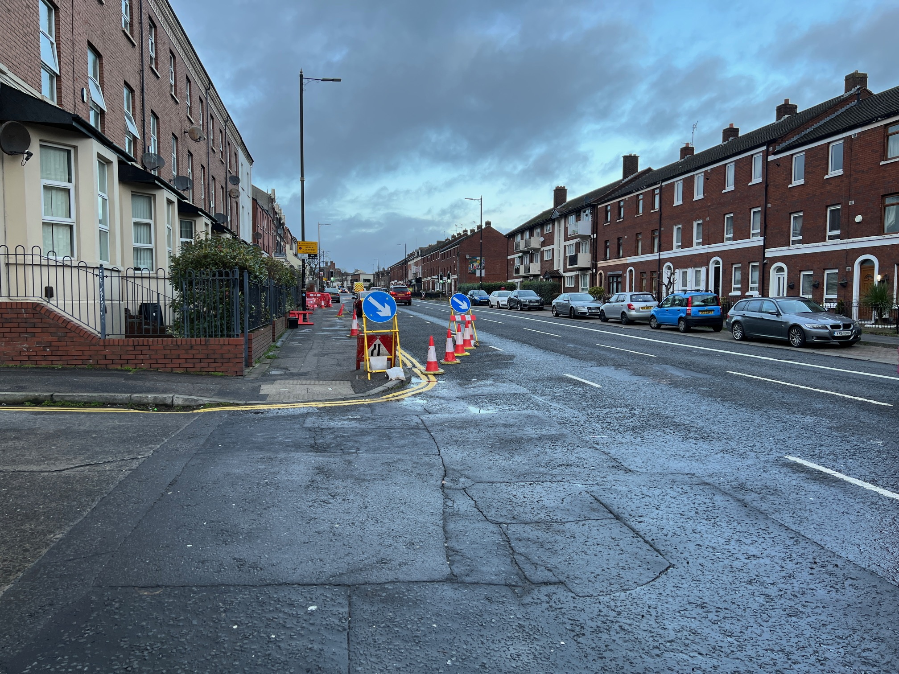
🇬🇧 Northern Ireland 🇬🇧
Similar to Scotland, small traffic cones and a lane change sign.
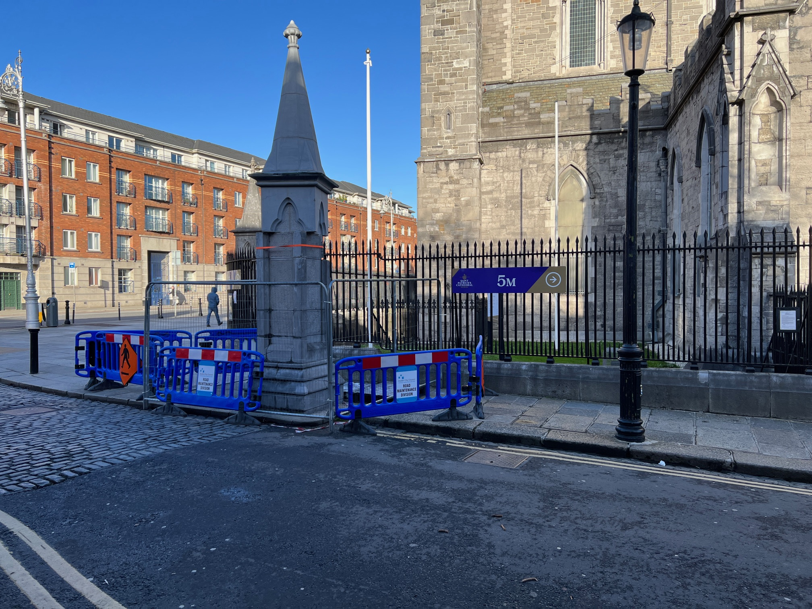
🇮🇪 Ireland 🇮🇪
A surprising sight, these barricades are blue. Not the most unusual color however, I also found them in green, purple, and pink!
🇳🇱 The Netherlands 🇳🇱
Another traffic divider, along with a small excavator, prominent in Europe due to the small lanes and buildings.
🇧🇪 Belgium 🇧🇪
A quick snap before departing, Belgium had surprisingly little road work going on.
🇩🇪 Germany 🇩🇪
More lane dividers, this time outside of the Berlin Film Festival building. I attempted to blur the cars and the people, an avid fan of Long Exposure in the iOS Photos app.
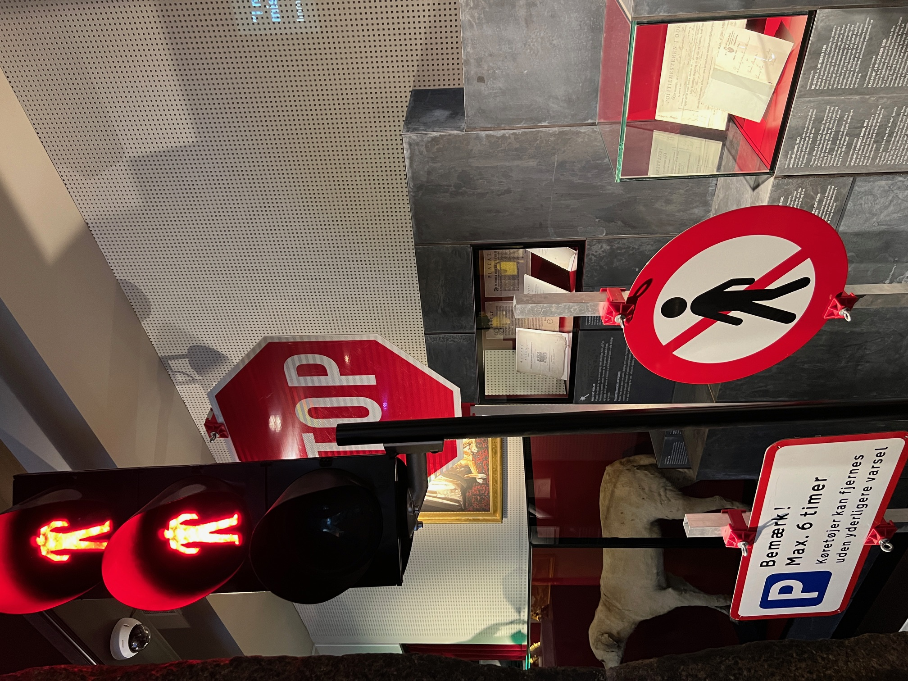
🇩🇰 Denmark 🇩🇰
This time the picture is inside! Shot in the Danish History Museum in Odense.
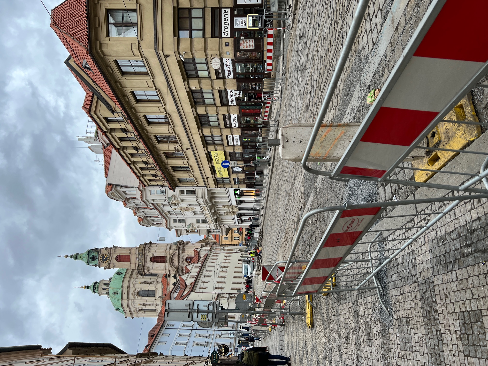
🇨🇿 Czech Republic 🇨🇿
A number of barricades along the hilly streets of Prague, featuring a local church monument in the background.
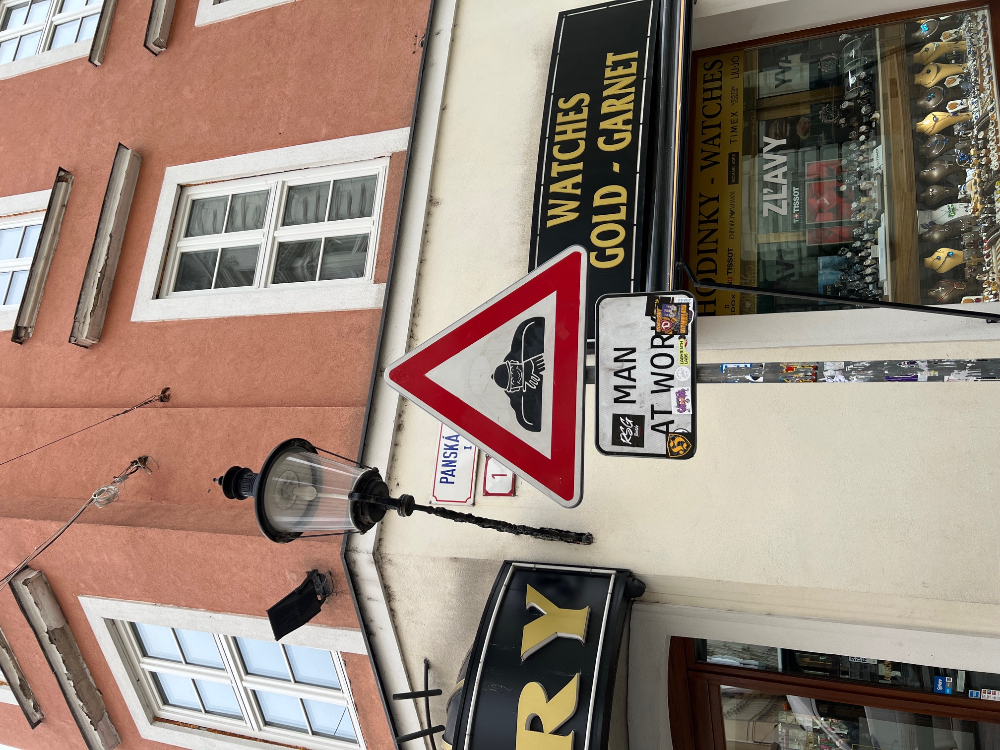
🇸🇰 Slovakia 🇸🇰
This sign serves no actual purpose except to remind of the "work" done during communist times.
🇷🇴 Romania 🇷🇴
Not the greatest picture of this set, compliments of Daniela two cats feature largely against a background of mobile fencing and a construction waste can.
🇧🇬 Bulgaria 🇧🇬
As much a fan of construction equipment as signs, photographed here is the local excavator depot alongside the highway.
🇷🇸 Serbia 🇷🇸
Quickly taken while on the bus, this old piece of mining construction equipment was just found (and photographed) along the side of the road!
🇧🇦 Bosnia and Herzegovina 🇧🇦
The interesting architecture and design of the Old Town Hall of Sarajevo feature here along with a classic street sign and a traffic light - the first appearance of such technology.
🇬🇷 Greece 🇬🇷
These bright orange delineator posts contrast strongly against the old streets of Thessaloniki.
🇮🇹 Italy 🇮🇹
Against a high arch of Italy, many signs from all different categories feature on this construction photo.
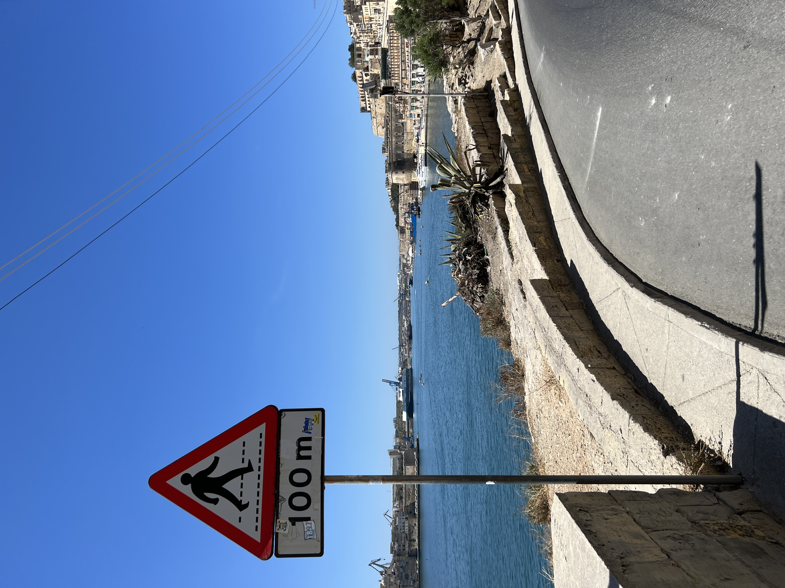
🇲🇹 Malta 🇲🇹
The beautiful (and very walkable) bay of Malta.
🇭🇷 Croatia 🇭🇷
There was not a lot of selection for construction signs and equipment in Croatia, so instead I photographed the the beautiful Zagreb Cathedral with construction equipment in front of it.
🇸🇮 Slovenia 🇸🇮
One of the biggest tourist attractions in Slovenia, the Dragon Bridge, being an actual vehicle thoroughfare has road signs in front of it, featured in this photo.
🇨🇭 Switzerland 🇨🇭
With a construction schedule much like their train schedules, I was unable to find enough construction, so I "settled" with some skiing equipment high up on the opposite peak of the Matterhorn.
🇱🇮 Liechtenstein 🇱🇮
Right after crossing the bridge (by foot) into Liechtenstein there was these signs against a beautiful backdrop.
🇫🇷 France 🇫🇷
A shot from Vimy, the Avenue of Canada had a personal connection as Canadians, while also marking the sacrifices of war.
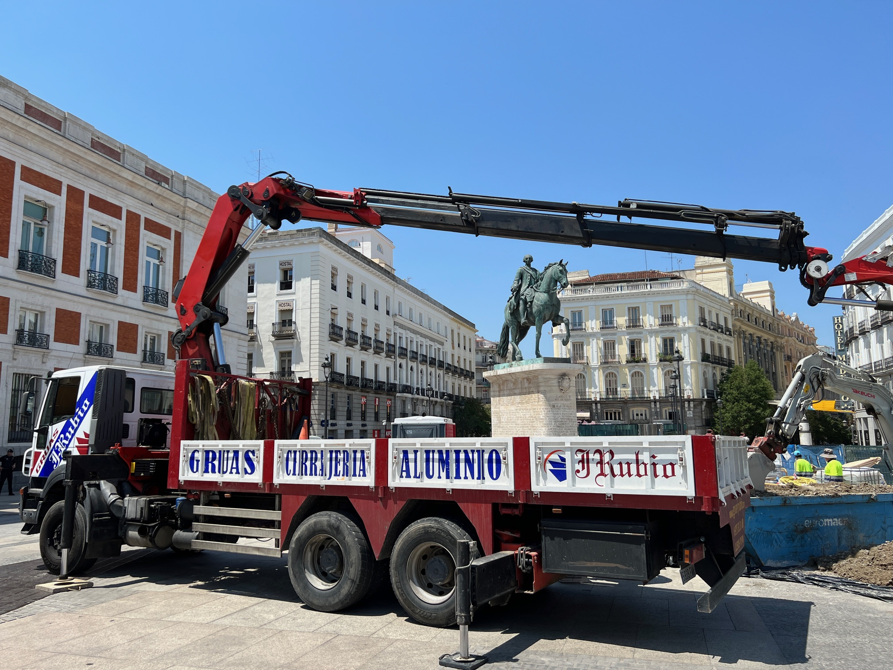
🇪🇸 Spain 🇪🇸
Right in the center of Madrid, this large piece of construction equipment was a perfect opportunity for a shot.
🇵🇹 Portugal 🇵🇹
On the beach, like most of Portugal, this shot was taken highlighting the large excavator, and showing how the project evolved over time from construction signs to construction equipment.
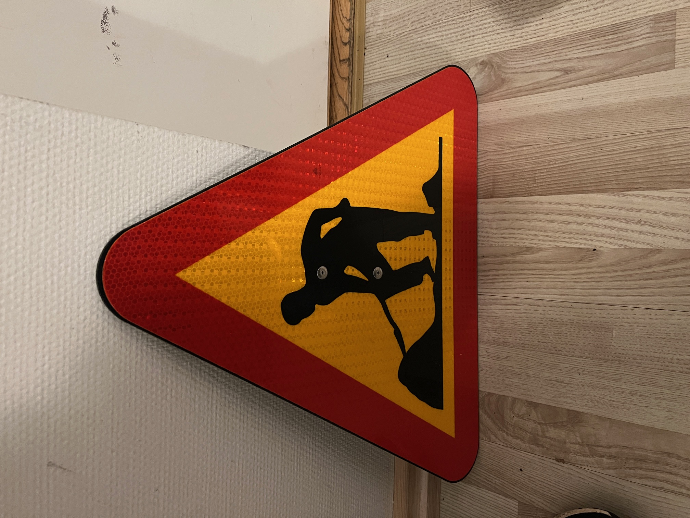
Stolen
Could not forget about this sign - after finding it abandoned in the dirt, I attempted to "steal" it and bring it back in my backpack, but unfortunately European signs are surprisingly durable and I was unable to break it to make it fit.